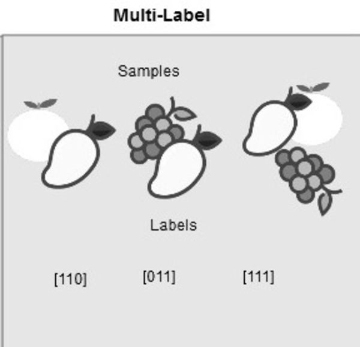

An Introduction to Classification
In contemporary times, numerous industries grapple with extensive datasets of diverse kinds. The manual processing of such vast information is not only time-consuming but may also lack long-term value. To address this challenge, various strategies, ranging from basic automation to the application of machine learning techniques, are being employed across industries to enhance efficiency and achieve a better return on investment.
This blog will focus on a pivotal concept within this landscape: classification in machine learning. The initial section will establish the definition of classification, followed by a clarification of the two types of learners in this field and an elucidation of the distinctions between classification and regression. The subsequent part of the exploration will delve into practical scenarios where classification proves to be a valuable tool, demonstrating its real-world applications.
The final section will provide a comprehensive overview of the various types of classification, offering in-depth examples of classification algorithms. To facilitate a practical understanding, the blog will conclude with hands-on practice sessions, guiding readers through the implementation of selected algorithms. This structured approach aims to equip readers with both theoretical knowledge and practical skills in the realm of machine learning classification.
What is Classification in Machine Learning?
Classification, a supervised machine learning method, involves the model predicting the correct label for a given input dataset. In this process, the model undergoes full training using a designated training dataset. Subsequently, its performance is evaluated on a separate test dataset before it is utilized to make predictions on entirely new and unseen data.
Machine Learning Classification Vs. Regression
Machine Learning algorithms can be broadly classified into four main categories: supervised learning, unsupervised learning, semi-supervised learning, and reinforcement learning.
While both classification and regression belong to the supervised learning category, it's important to recognize that they are distinct from each other.
- 1) In cases where the target variable is discrete, the prediction task falls under classification. An example application involves identifying the inherent sentiment of a piece of text.
- 2) When the target variable is continuous, the prediction task is categorized as regression. For instance, an example scenario involves predicting a person's salary based on factors such as education degree, previous work experience, geographical location, and level of seniority.
Examples of Machine Learning Classification in Real Life
The application of Supervised Machine Learning Classification spans various domains in our everyday lives. Here are a few examples.
Transportation
Transportation plays a pivotal role in the economic development of many countries. In response to this significance, industries are increasingly leveraging machine and deep learning models for sophisticated applications. One such application involves predicting the escalation of traffic volume in specific geographical locations, enabling better planning and resource allocation. Additionally, these models are employed to forecast potential challenges arising in particular areas due to varying weather conditions. This proactive approach aids in addressing issues before they occur, contributing to more efficient and resilient transportation systems.
Agriculture
Agriculture, being a fundamental pillar of human survival, can benefit significantly from the integration of sustainable practices. By doing so, we can enhance farmers' productivity to a considerable extent while ensuring minimal environmental impact. This involves the application of sophisticated classification models, which can predict the suitability of specific types of land for particular seeds. Through these models, farmers gain insights into optimal conditions, allowing for more informed and precise decisions in crop planning.
Furthermore, the adoption of sustainable agriculture involves leveraging predictive capabilities to anticipate weather conditions. By employing advanced forecasting techniques, farmers can proactively take preventive measures, mitigating potential risks and optimizing their agricultural practices. This comprehensive approach not only enhances agricultural productivity but also contributes to the overall resilience and sustainability of the farming ecosystem.
Healthcare Industry
The utilization of machine learning models in healthcare, specifically training them on historical patient data, presents a valuable tool for healthcare specialists to enhance the accuracy of their diagnoses. This is exemplified by the application of machine learning models during the COVID-19 pandemic, where they played a pivotal role in efficiently predicting whether an individual was afflicted by COVID-19. By leveraging historical patient data, these models could discern patterns and characteristics indicative of the virus, aiding healthcare professionals in making timely and informed decisions.
Looking beyond current challenges, the potential of machine learning extends to proactive healthcare measures. Researchers can employ machine learning models to predict the likelihood of new diseases emerging in the future. By analyzing various factors and trends within historical data, these models can provide valuable insights into potential health threats, enabling a more anticipatory and prepared approach to emerging diseases. This forward-looking application underscores the versatility and impact of machine learning in the realm of healthcare.
Types of Classification Tasks in Machine Learning
There are four main classification tasks in Machine learning: binary, multi-class, multi-label, and imbalanced classifications.
Binary classification:
Binary classification is a type of supervised machine learning task where the goal is to categorize input data into one of two possible classes. In this scenario, the target variable, or the output, is binary, meaning it has only two possible outcomes or classes. The algorithm learns from a labeled training dataset where each example is assigned to one of the two classes, and it aims to predict the correct class for new, unseen data.
The two classes are often denoted as positive (1) and negative (0), representing the presence or absence of a particular characteristic or outcome. Binary classification is commonly used in various applications, such as spam detection (spam or not spam), disease diagnosis (positive or negative), and fraud detection (fraudulent or non-fraudulent transactions). Popular algorithms for binary classification include logistic regression, support vector machines, and decision trees.
Multi-class classification:

Multi-class classification is a type of supervised machine learning task where the goal is to categorize input data into one of three or more classes. In this scenario, the target variable, or the output, can have multiple possible outcomes or classes. The algorithm is trained on a labeled dataset where each example is associated with one specific class among the multiple classes.
Unlike binary classification, where there are only two possible classes (e.g., spam or not spam), multi-class classification deals with more complex scenarios with three or more distinct categories. Examples of multi-class classification tasks include handwritten digit recognition (classifying digits 0 through 9), sentiment analysis with multiple sentiment categories (positive, neutral, negative), or image recognition with different object classes.
Multi-Label Classification:
Multi-label classification is a type of supervised machine learning task where each instance in the dataset can be assigned multiple labels or categories. In contrast to traditional classification tasks, where each instance is associated with only one label, multi-label classification allows for the assignment of multiple labels to a single instance. The goal is to predict a set of labels for each input data point.
This type of classification is commonly encountered in scenarios where instances may belong to more than one category simultaneously. For example, in text classification, a document may be associated with multiple topics, or in image classification, an image may contain several objects. Multi-label classification algorithms learn to predict the presence or absence of each label independently for a given instance.
Imbalanced Classification:
Imbalanced classification refers to a scenario in supervised machine learning where the distribution of classes in the dataset is not uniform, leading to a significant imbalance in the number of instances belonging to each class. In an imbalanced classification problem, one class (the minority class) has significantly fewer examples than the other class or classes (the majority class or classes).
This imbalance can pose challenges for traditional classification algorithms because they may be biased toward predicting the majority class, as it often results in higher accuracy. However, this can be problematic in situations where the minority class is of particular interest or significance, such as fraud detection, rare disease diagnosis, or rare event prediction.
Imbalanced classification refers to a scenario in supervised machine learning where the distribution of classes in the dataset is not uniform, leading to a significant imbalance in the number of instances belonging to each class. In an imbalanced classification problem, one class (the minority class) has significantly fewer examples than the other class or classes (the majority class or classes).
This imbalance can pose challenges for traditional classification algorithms because they may be biased toward predicting the majority class, as it often results in higher accuracy. However, this can be problematic in situations where the minority class is of particular interest or significance, such as fraud detection, rare disease diagnosis, or rare event prediction.
To address imbalanced classification, various techniques can be employed, including:
- 1)Resampling: Adjusting the number of instances in the dataset for each class, either by oversampling the minority class, undersampling the majority class, or a combination of both.
- 2)Cost-sensitive learning: Assigning different misclassification costs to different classes to penalize errors on the minority class more heavily.
- 3)Ensemble methods: Using ensemble techniques like boosting or bagging to combine multiple models, emphasizing the minority class during training.
Handling imbalanced datasets requires careful consideration and appropriate strategies to ensure that the model is not biased towards the majority class and can effectively recognize patterns in the minority class.
This conceptual blog delved into the core aspects of classification in machine learning, offering insights into its key principles. It further illustrated the diverse applications of classification across various domains. The blog concluded by exploring the practical implementation of two classification algorithms, namely Logistic Regression and Support Vector Machine. To enhance the model's training, both undersampling and SMOTE oversampling strategies were employed, aiming to create a balanced dataset for more robust and unbiased model performance.